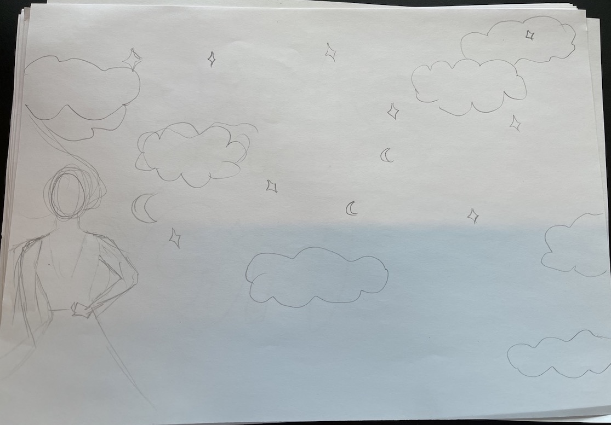

Vi skulle udvælge en stil vi i vores spil skulle bruge. Jeg havde sat mig fast på mit spil skulle gå ud på at rede så kaldte Girls Girls og undgå Pick Me Girls. Af den grund var jeg med det samme draget hen mod Jade Purple Browns stil, da jeg med det samme kunne se den passe ind i min vision.
I min skitse fase havde jeg en klar ide til hvordan mit spil skulle se ud. Jeg startede med baggrunden som jeg forestillede mig skulle være en aftenhimmel med skyer og stjerner. Derefter lavede jeg en grov skitse af mine karakterer som jeg satte ind i min papirprototype.
Jeg gik hurtigt videre fra skitse fasen til at arbejde direkte i illustrator, da jeg synes det var nemmere for mig at få de resultater jeg sigtede efter på den måde. Jeg startede med ideen om der skulle være to forskellige gode og dårlige elementer, men endte med at lave tre gode elementer fordi jeg havde det sjovt med design processen. Nedenunder kan man se processen fra min første hurtige skitse til de 3 af de færdige karakter, der er med i spillet.

I min skitse fase havde jeg en klar ide til hvordan mit spil skulle se ud. Jeg startede med baggrunden som jeg forestillede mig skulle være en aftenhimmel med skyer og stjerner. Derefter lavede jeg en grov skitse af mine karakterer som jeg satte ind i min papirprototype.